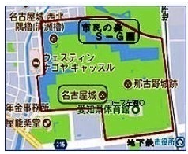

一覧へ戻る
2026年_金のしゃちほこマラソン予定(名古屋市)
2025-12-27 05:50:23
走って免疫力アップしよまい！
健康維持と交流を目的とした、名古屋城周回マラソンです。タイムを競うのではなく、各自のペースで楽しく走りましょう！
📍開催場所・コース
• 名古屋市中区 名古屋城周回コース（歩道利用）
• 1周 約3.1km（フルマラソンの場合は14周）
• 集合場所：名城公園北園駐車場から50m、市民茶屋付近（スタート・ゴール地点、トイレあり）
🕘集合・スタート時間
• 集合時間：自由（個人調整可能）
• スタート：原則 午前9時（フリースタート）
• 制限時間：午後3時まで
🧳持ち物・記録方法
• 自己計測・記録
• 完走後、備え付けのノートに記録を記入
• 完走者には「完走証」を発行
• 記録は「フル百回楽走会」HPに掲載
💴参加費・申込方法
• 参加費：1,000円
• 申込方法：実施日の1週間前までに、以下の情報を往復ハガキまたはEメールで送付
• 氏名
• 住所
• 電話番号
申込先：河合義純 様
※申込先の住所、メールアドレス等は事務局まで問合せ下さい。
| 回数 |
日程 |
曜日 |
| 第131回 |
2026年2月22日 |
日曜日 |
| 第132回 |
2026年4月26日 |
日曜日 |
| 第133回 |
2026年6月28日 |
日曜日 |
| 第134回 |
2026年8月23日 |
日曜日 |
| 第135回 |
2026年10月25日 |
日曜日 |
| 第136回 |
2026年12月27日 |
日曜日 |
